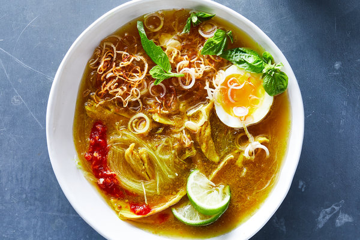

Back to Home
Mee Soto

Soto ayam, an Indonesian version of chicken soup, is a clear herbal broth brightened by fresh turmeric and herbs, with skinny rice noodles buried in the bowl.
It is served with a boiled egg, fried shallots, celery leaves and herbs, and is hearty enough for a meal.
Ingredients
- 1 free-range chicken, about 3 pounds, quartered
- 2 stalks fresh lemongrass, bruised with the handle of a heavy knife and tied in a knot
- 6 makrut lime leaves, fresh or frozen (optional)
- 1 teaspoon kosher salt, plus more to taste
- 1 teaspoon black peppercorns
- 1 ½ tablespoons coriander seeds
- 2 teaspoons cumin seeds
- 5 shallots, peeled and halved
- 3 garlic cloves, peeled
- 2 teaspoons finely minced fresh turmeric, or 1 1/2 teaspoons ground turmeric
- 2 tablespoons finely minced ginger
- 3 tablespoons peanut oil
- 4 ounces glass noodles or thin dried rice noodles, called vermicelli, bihun or bun
- 1 tablespoon fresh lime juice
- 2 tablespoons chopped celery leaves, mint, Thai basil or cilantro leaves
- 2 shallots, thinly sliced and fried in vegetable oil until brown (optional)
- Quartered limes
- Chili paste (such as sambal), for serving
- Cooked white rice (optional)
Steps
- Place chicken in a medium pot with lemongrass, lime leaves (if using), salt and 2 quarts water. Bring to a boil over high heat. Skim off any foam and reduce heat to a simmer. Cover and simmer until chicken is tender, about 45 minutes, skimming as needed to make a clear broth. Remove chicken pieces from broth and set aside. Remove and discard lemon grass and lime leaves; reserve stock in pot. When chicken is cool enough to handle, discard skin and bones and shred meat into bite-size pieces.
- Meanwhile, combine peppercorns, coriander seeds and cumin seeds in a small food processor. Pulse until ground. Add halved shallots, garlic, turmeric and ginger and pulse to a thick paste. (Add a little water if needed.)
- Heat peanut oil in a medium saucepan over high heat. When very hot, add spice paste and cook, stirring until paste is cooked and beginning to separate from the oil, about 5 minutes.
- Add cooked spice paste and chicken meat to stock. Bring to a simmer and cook 10 minutes.
- Cook noodles according to package directions.
- Turn off heat under soup and stir in lime juice. Taste for salt.
- To serve, divide noodles in large soup bowls. Ladle chicken pieces and soup on top and sprinkle with celery leaves or herbs, and fried shallots, if using. Pass lime and sambal at the table.
- Eat from soup bowl, or serve a scoop of rice on a side plate, sprinkled with more shallots, and put a mouthful of noodles and chicken on rice. Combine on a spoon, dab with sambal, and eat.